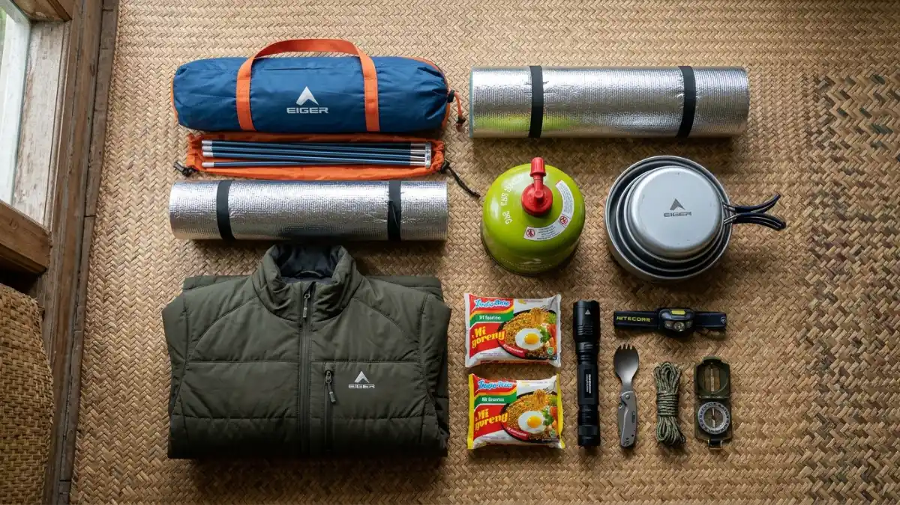
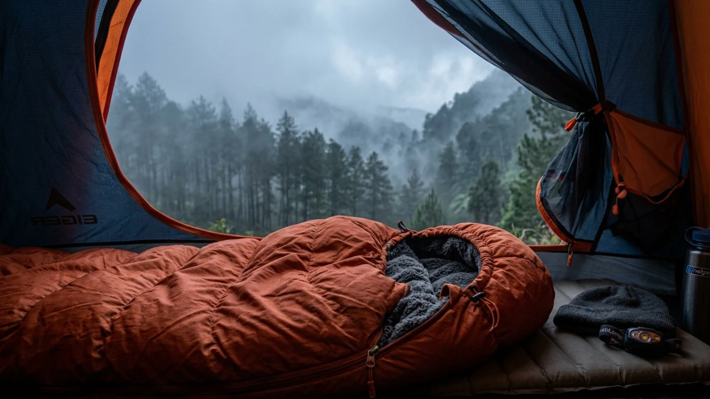

Perlengkapan camping yang tepat adalah kunci kenyamanan dan keselamatan saat berkemah di kawasan pegunungan Batu.Perlengkapan camping di Batu wajib mencakup tenda tahan angin, sleeping bag berrating dingin, jaket tebal, dan P3K dasar untuk menghadapi suhu malam yang bisa turun hingga 8 derajat Celsius.
Mengapa Perlengkapan yang Tepat Sangat Penting untuk Camping di Batu?
Memilih perlengkapan camping yang sesuai dengan kondisi alam Batu bukan sekadar soal kenyamanan, tetapi juga keselamatan.
Kawasan pegunungan di sekitar Batu memiliki karakteristik cuaca yang berubah cepat dan suhu yang jauh lebih dingin dari perkiraan banyak pengunjung baru.
Menurut data pencarian dan ulasan dari platform wisata outdoor Indonesia sepanjang 2024, keluhan paling umum pengunjung area camping di Batu adalah ketidaksiapan menghadapi suhu malam dan kondisi tanah yang lembap.
Kedua masalah ini sebenarnya dapat diatasi sepenuhnya dengan perlengkapan yang tepat sebelum berangkat.
Apa Saja Perlengkapan Utama yang Wajib Dibawa?
Perlengkapan camping di Batu terbagi dalam beberapa kategori berdasarkan fungsi dan tingkat kepentingannya.
Kategori pertama adalah perlengkapan shelter dan tidur yang melindungi dari kondisi cuaca dan suhu rendah.
Tenda
Pilih tenda dengan spesifikasi berikut untuk kondisi Batu:
- Kapasitas sesuai jumlah anggota rombongan plus satu ukuran (contoh: tenda 3 orang untuk 2 pengunjung agar lebih longgar)
- Rating waterproof minimal 2.000mm untuk mengantisipasi hujan mendadak
- Konstruksi dome atau geodesic yang lebih stabil menghadapi angin pegunungan
- Bobot di bawah 3 kg untuk kemudahan transportasi jika harus dibawa mendaki
Sleeping Bag
Ini adalah investasi paling kritis untuk camping di Batu. Pilih sleeping bag dengan:
- Temperature rating nyaman (comfort rating) minimal 10 derajat Celsius untuk kawasan bawah, dan 5 derajat Celsius untuk puncak gunung
- Material sintetis lebih tahan terhadap kelembapan dibanding bulu angsa, cocok untuk iklim tropis basah
- Panjang sesuai tinggi badan agar insulasi bekerja optimal
Matras atau Sleeping Pad
Matras berfungsi mengisolasi tubuh dari dingin tanah, bukan hanya soal kenyamanan. Tanah basah dan dingin di kawasan pegunungan Batu dapat menurunkan suhu tubuh lebih cepat dibanding udara dingin sekalipun. Gunakan foam pad tebal atau sleeping pad inflatable sebagai lapisan isolasi.
Perlengkapan Pakaian yang Harus Disiapkan
Sistem berpakaian berlapis (layering system) adalah pendekatan paling efektif untuk mengelola suhu tubuh saat camping di Batu, di mana suhu siang dan malam bisa berbeda hingga 12 derajat Celsius.
Lapisan dasar (base layer): Kaos berbahan wicking yang menyerap dan mengevaporasi keringat dengan cepat. Hindari katun karena lambat kering dan terasa dingin saat basah.
Lapisan tengah (mid layer): Fleece atau jaket berbahan wool untuk insulasi. Ini adalah lapisan yang paling sering dilepas dan dipasang sesuai perubahan suhu.
Lapisan luar (outer layer): Jaket windproof atau waterproof untuk perlindungan dari angin dan hujan. Di kawasan puncak gunung seperti Panderman, lapisan ini esensial bahkan di musim kemarau.
Selain itu, siapkan juga:
- Celana panjang berbahan quick-dry
- Kaus kaki wol atau sintetis minimal dua pasang
- Sarung tangan tipis
- Topi kupluk atau balaclava untuk malam hari
- Alas kaki yang sesuai medan (sepatu hiking untuk pendakian, sandal untuk relaksasi di camp)

Sleeping bag dengan rating suhu yang tepat adalah investasi paling kritis untuk menghadapi malam dingin di pegunungan Batu.Perlengkapan Navigasi, Pencahayaan, dan Keselamatan
Perlengkapan navigasi dan pencahayaan untuk camping di Batu tidak kalah pentingnya dengan perlengkapan tidur dan pakaian.
Headlamp lebih dianjurkan dibanding senter biasa karena membebaskan kedua tangan. Bawa baterai cadangan karena suhu dingin dapat mempercepat habisnya daya baterai.
Peta jalur dan kompas tetap relevan meski smartphone tersedia, karena sinyal seluler di beberapa area kawasan Batu tidak stabil atau hilang sama sekali.
Peluit darurat adalah alat keselamatan kecil namun sangat berguna jika tersesat atau membutuhkan pertolongan.
P3K dasar yang harus selalu dibawa meliputi:
- Plester dan perban
- Antiseptik
- Obat anti-diare dan obat demam
- Obat alergi
- Salep untuk luka lecet
- Obat pribadi jika ada kondisi kesehatan tertentu
Perlengkapan Masak dan Konsumsi
Camping di Batu biasanya berlangsung satu hingga dua malam, sehingga manajemen makanan dan air menjadi penting.
Perlengkapan masak yang direkomendasikan:
- Kompor portable dengan bahan bakar yang mencukupi (hitung kebutuhan berdasarkan durasi dan jumlah anggota)
- Panci atau mess kit yang ringan
- Alat makan dan peralatan sederhana
- Kantong plastik untuk menyimpan sampah
Untuk air, bawa minimal 2 liter per orang per hari sebagai stok. Beberapa lokasi camping di Batu memiliki sumber air, namun selalu saring atau masak terlebih dahulu sebelum dikonsumsi.
Perlengkapan Mana yang Bisa Disewa di Batu?
Tidak semua pengunjung perlu membeli perlengkapan lengkap, terutama bagi yang baru pertama kali mencoba camping. Beberapa toko outdoor dan pengelola camping di sekitar Kota Batu dan Malang menyediakan layanan sewa dengan kisaran harga:
- Tenda: Rp50.000-Rp150.000 per malam
- Sleeping bag: Rp30.000-Rp75.000 per malam
- Matras: Rp15.000-Rp30.000 per malam
- Kompor dan perlengkapan masak: Rp25.000-Rp50.000 per malam
Meski demikian, pakaian dan alas kaki sebaiknya dimiliki sendiri karena menyangkut kebersihan dan kesesuaian ukuran personal.
Perlengkapan camping di Batu yang memadai terpusat pada tiga prioritas: perlindungan dari dingin malam, shelter yang tahan cuaca, dan keselamatan di lapangan.
Bagi pemula, sewa perlengkapan besar seperti tenda dan sleeping bag adalah pilihan ekonomis sebelum memutuskan investasi peralatan sendiri.
FAQ — Perlengkapan Camping di Batu